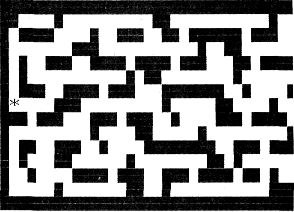
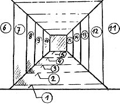
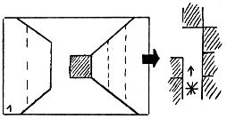
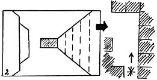
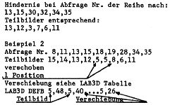
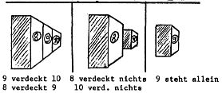
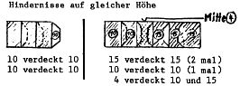
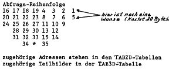

3D-Labyrinth
von Peter Brendel

Es wird ein Labyrinth im Speicherbereich 22048-23007 dez. aufgebaut.
Von einem angenommenen Standort ausgehend, werden aus einer der
möglichen Himmelsrichtungen vom Hintergrund (5 Schritte in
entsprechender Himmelsrichtung) bis zum Vordergrund nacheinander 37
Speicherplätze auf Hindernis (FF) abgefragt. Nach der gleichen
Reihenfolge der Abfrage ist eine Tabelle (TAB3D) der Daten angelegt,
die für die Erzeugung von „Instant-Teilbildern“
verantwortlich sind. Diese Teilbilder entsprechen der räumlichen
Zuordnung des gefundenen Hindernisses. Sie werden in jedem Fall
erzeugt, aber dadurch, daß die Abfrage von hinten nach vorne erfolgt,
immer wieder von anderen Bildern überdeckt, bis endlich nach der 37.
Abfrage das komplette folgerichtige Gesamtbild entstanden ist. Dieses
Abfrage-Programm paßt sich jedem Labyrinth an, wie es auch aussehen
mag. Nun der Pferdefuß: Es sind nur 15 Instant-Bilder! Auf die Zahl 37
komme ich nur, weil ich die Bilder je nach Standort des Hindernisses
parallel verschiebe, also mehrfach verwende. Und da komme ich mit den
Gesetzen der Perspektive in Konflikt. Der beabsichtigte Blickwinkel von
90 Grad ist unter diesen Umständen nicht machbar. Somit entstand ein
Kompromiß von etwa 60 Grad mit Wanze, die aber weiter nicht auffällt.
Korrektur wird nachgereicht. Ich empfehle darum (und auch wegen
geplanter Erweiterungen) jedem, sich die Mühe zu machen, das
Assembler-Listing statt des Hexdumps abzutippen. (Ganz Eilige können
mir eine Kassette + Rückporto schicken; ich kopier’s. Allerdings nur
1200 Bd Nascom2-Format, der Zeit wegen.
Teilbilder

Beispiele





